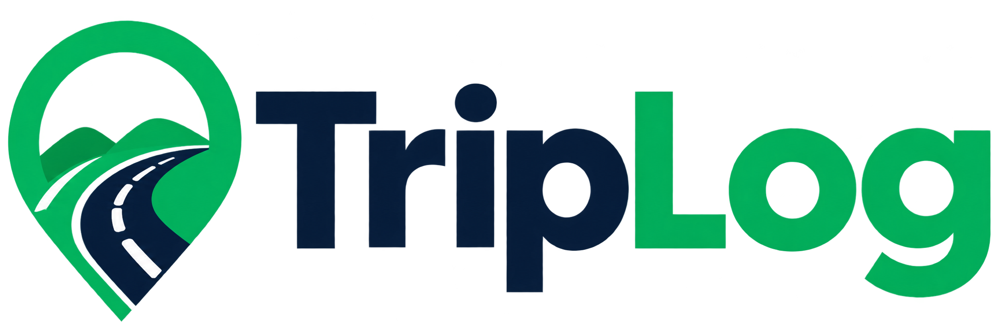
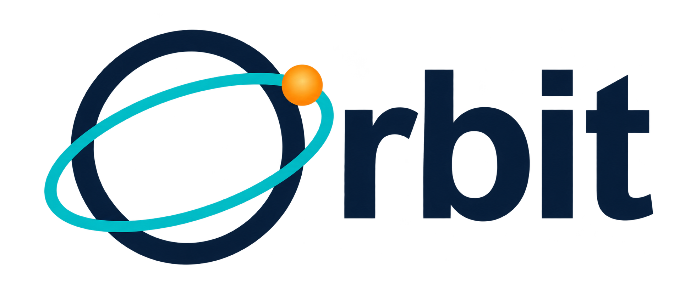

Sebrae Supernova

Tecnologia, ideias e empreendedorismo.
Participação no programaEmpreendedorismo · Sebrae Supernova
Triplog
Participei do Sebrae Supernova com o projeto Triplog, realizado pela Orbit, conectando meu interesse por tecnologia à experiência de desenvolver uma ideia em um programa de empreendedorismo.
- Inovação
- Empreendedorismo
- Tecnologia
Código ainda não publicado.